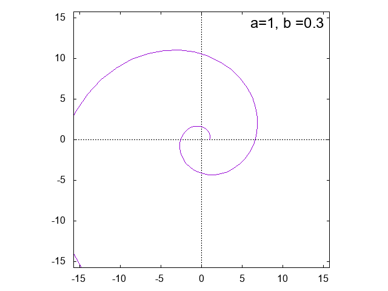

GNUPLOT入門
gnuplot入門(テキスト)
アステロイド \[ x = a \cos^3 \theta, \qquad y = a \sin^3 \theta \]
 |
||
|
|
|
リサージュ曲線 \[ x = \sin a t, \qquad y= \sin b t \]


アルキメデスの渦巻線 \[ r = a \theta \]

対数螺旋 \[ r = a e^{b\theta} \]
|  | |
正葉曲線 \[ r = \sin a \theta \]


リマソン \[ r = a + b \cos \theta \] \(a=b\) のとき、極方程式 \(r=a(1 + \cos \theta)\) で表される曲線をカージオイドという。


ミルクティーを照らす光
 |
||
| 原点と点(1, 0)を中心とする半径の１の円の周上の他 の点を直径とする円の包絡線としてのカージオイド |
レム二スケート \[ (x^2+y^2)^2 = 2 a^2(x^2-y^2) \]

カッシーニの卵型曲線 \[ (x^2+y^2+a^2)^2 = 4a^2x^2 + b^4 \] \(a=b\) のときは、レム二スケートである。

\[ 曲線 4(x^2+y^2-2x)^2+(x^2-y^2)(x-1)(2x-3) = 0 \]
サイクロイド \[ x = a(\theta - \sin \theta), \qquad y = a(1 - \cos \theta) \]
縮閉線としてのサイクロイド
トロコイド(trochoid)
モンキーハンティング
(Monkey Hunting - Genocide)
ワイエルシュトラス関数(Weierstrass function)